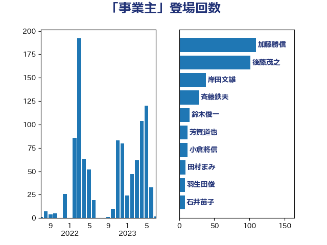

単語「事業主」

| 加藤勝信 | 自由民主党 | 109 回 |
| 後藤茂之 | 自由民主党 | 101 回 |
| 岸田文雄 | 自由民主党 | 38 回 |
| 斉藤鉄夫 | 公明党 | 28 回 |
| 鈴木俊一 | 自由民主党 | 15 回 |
| 芳賀道也 | 国民民主党 | 12 回 |
| 小倉將信 | 自由民主党 | 12 回 |
| 田村まみ | 国民民主党 | 9 回 |
| 羽生田俊 | 自由民主党 | 8 回 |
| 石井苗子 | 日本維新の会 | 8 回 |
| 川田龍平 | 立憲民主党 | 8 回 |
| 伊佐進一 | 公明党 | 8 回 |
| 井坂信彦 | 立憲民主党 | 8 回 |
| 杉久武 | 公明党 | 7 回 |
| 山井和則 | 立憲民主党 | 7 回 |
| 佐藤英道 | 公明党 | 7 回 |
| 西村智奈美 | 立憲民主党 | 6 回 |
| 山添拓 | 日本共産党 | 6 回 |
| 大西健介 | 立憲民主党 | 6 回 |
| 上田勇 | 公明党 | 6 回 |
| 片山さつき | 自由民主党 | 5 回 |
| 深澤陽一 | 自由民主党 | 5 回 |
| 池下卓 | 日本維新の会 | 5 回 |
| 水野素子 | 立憲民主党 | 5 回 |
| 柚木道義 | 立憲民主党 | 5 回 |
| 本村伸子 | 日本共産党 | 5 回 |
| 山際大志郎 | 自由民主党 | 5 回 |
| 尾身朝子 | 自由民主党 | 5 回 |
| 城井崇 | 立憲民主党 | 5 回 |
| 吉田はるみ | 立憲民主党 | 5 回 |
| 上田英俊 | 自由民主党 | 5 回 |
| 門山宏哲 | 自由民主党 | 4 回 |
| 西銘恒三郎 | 自由民主党 | 4 回 |
| 窪田哲也 | 公明党 | 4 回 |
| 畦元将吾 | 自由民主党 | 4 回 |
| 東徹 | 日本維新の会 | 4 回 |
| 岡田直樹 | 自由民主党 | 4 回 |
| 山本香苗 | 公明党 | 4 回 |
| 宮本徹 | 日本共産党 | 4 回 |
| 古川康 | 自由民主党 | 4 回 |
| 齋藤健 | 自由民主党 | 3 回 |
| 長友慎治 | 国民民主党 | 3 回 |
| 鈴木隼人 | 自由民主党 | 3 回 |
| 鈴木義弘 | 国民民主党 | 3 回 |
| 野田聖子 | 自由民主党 | 3 回 |
| 西村康稔 | 自由民主党 | 3 回 |
| 石橋通宏 | 立憲民主党 | 3 回 |
| 田村貴昭 | 日本共産党 | 3 回 |
| 生稲晃子 | 自由民主党 | 3 回 |
| 浮島智子 | 公明党 | 3 回 |
| 浜田聡 | NHK党 | 3 回 |
| 杉尾秀哉 | 立憲民主党 | 3 回 |
| 小沢雅仁 | 立憲民主党 | 3 回 |
| 小池晃 | 日本共産党 | 3 回 |
| 吉良よし子 | 日本共産党 | 3 回 |
| 古川禎久 | 自由民主党 | 3 回 |
| 倉林明子 | 日本共産党 | 3 回 |
| 中野洋昌 | 公明党 | 3 回 |
| 中島克仁 | 立憲民主党 | 3 回 |
| あかま二郎 | 自由民主党 | 3 回 |
| 高見康裕 | 自由民主党 | 2 回 |
| 高木宏壽 | 自由民主党 | 2 回 |
| 高木啓 | 自由民主党 | 2 回 |
| 道下大樹 | 立憲民主党 | 2 回 |
| 福田昭夫 | 立憲民主党 | 2 回 |
| 礒崎哲史 | 国民民主党 | 2 回 |
| 渡辺猛之 | 自由民主党 | 2 回 |
| 浜田靖一 | 自由民主党 | 2 回 |
| 浅尾慶一郎 | 自由民主党 | 2 回 |
| 泉健太 | 立憲民主党 | 2 回 |
| 梅村聡 | 日本維新の会 | 2 回 |
| 柴田巧 | 日本維新の会 | 2 回 |
| 松野明美 | 日本維新の会 | 2 回 |
| 末松信介 | 自由民主党 | 2 回 |
| 早稲田ゆき | 立憲民主党 | 2 回 |
| 新藤義孝 | 自由民主党 | 2 回 |
| 平木大作 | 公明党 | 2 回 |
| 川合孝典 | 国民民主党 | 2 回 |
| 岩渕友 | 日本共産党 | 2 回 |
| 岡本あき子 | 立憲民主党 | 2 回 |
| 山田太郎 | 自由民主党 | 2 回 |
| 安江伸夫 | 公明党 | 2 回 |
| 大島九州男 | れいわ新選組 | 2 回 |
| 大串博志 | 立憲民主党 | 2 回 |
| 塩川鉄也 | 日本共産党 | 2 回 |
| 国光あやの | 自由民主党 | 2 回 |
| 吉田久美子 | 公明党 | 2 回 |
| 古賀篤 | 自由民主党 | 2 回 |
| 加藤鮎子 | 自由民主党 | 2 回 |
| 伴野豊 | 立憲民主党 | 2 回 |
| 伊藤渉 | 公明党 | 2 回 |
| 伊藤孝江 | 公明党 | 2 回 |
| 仁比聡平 | 日本共産党 | 2 回 |
| 井上哲士 | 日本共産党 | 2 回 |
| 三浦信祐 | 公明党 | 2 回 |
| ながえ孝子 | 無所属 | 2 回 |
| 高階恵美子 | 自由民主党 | 1 回 |
| 高橋千鶴子 | 日本共産党 | 1 回 |
| 高橋光男 | 公明党 | 1 回 |
| 高市早苗 | 自由民主党 | 1 回 |
| 音喜多駿 | 日本維新の会 | 1 回 |
| 阿部司 | 日本維新の会 | 1 回 |
| 阿達雅志 | 自由民主党 | 1 回 |
| 野田佳彦 | 立憲民主党 | 1 回 |
| 野村哲郎 | 自由民主党 | 1 回 |
| 辻元清美 | 立憲民主党 | 1 回 |
| 西田昌司 | 自由民主党 | 1 回 |
| 西岡秀子 | 国民民主党 | 1 回 |
| 葉梨康弘 | 自由民主党 | 1 回 |
| 羽田次郎 | 立憲民主党 | 1 回 |
| 竹内真二 | 公明党 | 1 回 |
| 稲津久 | 公明党 | 1 回 |
| 神津たけし | 立憲民主党 | 1 回 |
| 石川香織 | 立憲民主党 | 1 回 |
| 石川大我 | 立憲民主党 | 1 回 |
| 石川博崇 | 公明党 | 1 回 |
| 石井啓一 | 公明党 | 1 回 |
| 田畑裕明 | 自由民主党 | 1 回 |
| 田村智子 | 日本共産党 | 1 回 |
| 田中健 | 国民民主党 | 1 回 |
| 玉木雄一郎 | 国民民主党 | 1 回 |
| 牧島かれん | 自由民主党 | 1 回 |
| 清水貴之 | 日本維新の会 | 1 回 |
| 浜野喜史 | 国民民主党 | 1 回 |
| 河野太郎 | 自由民主党 | 1 回 |
| 河西宏一 | 公明党 | 1 回 |
| 沢田良 | 日本維新の会 | 1 回 |
| 永岡桂子 | 自由民主党 | 1 回 |
| 櫻井周 | 立憲民主党 | 1 回 |
| 枝野幸男 | 立憲民主党 | 1 回 |
| 松本剛明 | 自由民主党 | 1 回 |
| 本田顕子 | 自由民主党 | 1 回 |
| 末次精一 | 立憲民主党 | 1 回 |
| 星北斗 | 自由民主党 | 1 回 |
| 早坂敦 | 日本維新の会 | 1 回 |
| 斎藤アレックス | 国民民主党 | 1 回 |
| 掘井健智 | 日本維新の会 | 1 回 |
| 打越さく良 | 立憲民主党 | 1 回 |
| 平林晃 | 公明党 | 1 回 |
| 岸真紀子 | 立憲民主党 | 1 回 |
| 山田勝彦 | 立憲民主党 | 1 回 |
| 山本博司 | 公明党 | 1 回 |
| 小林鷹之 | 自由民主党 | 1 回 |
| 小川淳也 | 立憲民主党 | 1 回 |
| 宮崎雅夫 | 自由民主党 | 1 回 |
| 奥野総一郎 | 立憲民主党 | 1 回 |
| 天畠大輔 | れいわ新選組 | 1 回 |
| 大岡敏孝 | 自由民主党 | 1 回 |
| 原口一博 | 立憲民主党 | 1 回 |
| 勝部賢志 | 立憲民主党 | 1 回 |
| 務台俊介 | 自由民主党 | 1 回 |
| 加藤竜祥 | 自由民主党 | 1 回 |
| 前原誠司 | 国民民主党 | 1 回 |
| 伊藤岳 | 日本共産党 | 1 回 |
| 伊藤孝恵 | 国民民主党 | 1 回 |
| 中村裕之 | 自由民主党 | 1 回 |
| 中川貴元 | 自由民主党 | 1 回 |
| 中川正春 | 立憲民主党 | 1 回 |